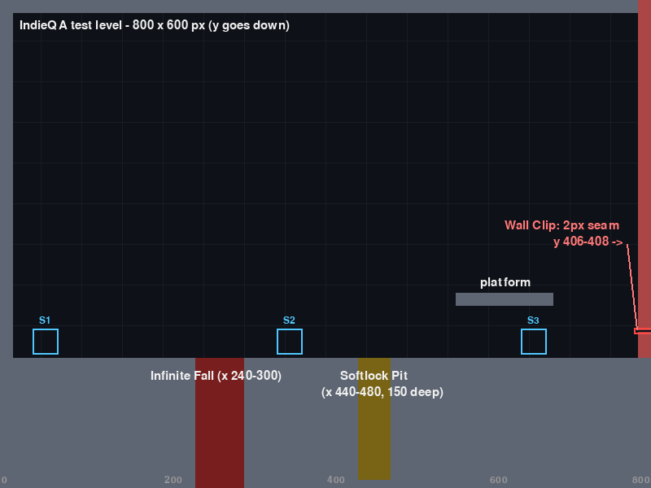
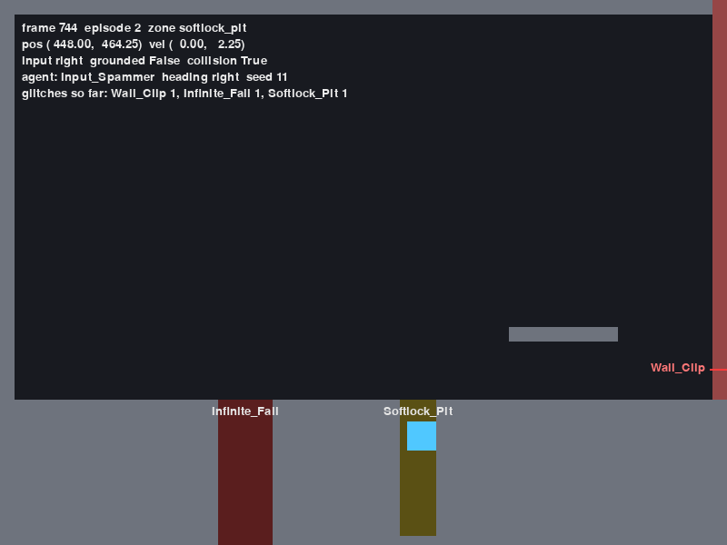

01 Neurobridge Game Summit 2026 · Baku Hackathon pitch
IndieQA
An autonomous QA bot for indie studios. It plays your level ~240× faster than real time, hunts physics and collision bugs, and hands you every bug with where it happened and the exact buttons to reproduce it.
We're IndieQA. Small studios can't afford QA teams, so physics bugs ship. Our bot plays your level on its own, far faster than a human, finds collision bugs and tells you exactly how to reproduce each one.
02 Problem User value
Collision bugs ship. Players find them on launch day.
Indie studios can't afford a QA team.
Walking through walls, falling out of the map, getting stuck: easy to miss by hand.
They surface as negative Steam reviews and refund requests.
Testers often can't say which inputs caused the bug, so reproducing it is slow.
Human QA tester
$25/h
and still misses physics edge cases
A human QA tester costs about $25 an hour. Physics bugs like clipping or falling out of the map are easy to miss by hand, and they show up on launch day as negative Steam reviews and refunds. Even when found, nobody knows the exact inputs.
03 Solution · How it works One command, runs locally
From autonomous play to a bug report you can replay.
01
Agent plays An autonomous agent plays the level. No human at the controls.
buttons →
02
Engine simulates Fixed 60 FPS physics, headless (no window), far faster than real time.
frame state →
03
Telemetry Every frame: position, velocity, buttons, grounded, collision.
CSV →
04
Bug detector Classifies physics anomalies. One report per bug: type, severity, location, last 30 inputs.
reports →
05
Dashboard Local website: coverage heatmap, red bug markers, filterable log, export.
localhost
Five steps. The agent plays, the engine simulates physics at a fixed 60 FPS without a window, telemetry records every frame, the detector turns anomalies into bug reports with the last 30 inputs, and the dashboard shows it all in the browser.
04 Where is the AI? Said honestly
An autonomous, rule-based agent built to break geometry.
State machine · not machine learning · not an LLM
Mode 1
Boundary_Seeker Senses the level with raycasts (wall ahead?) and ground probes (ledge ahead?). Walks to walls, edges and corners and hugs them, because that's where collision bugs live.
Mode 2
Input_Spammer When touching a wall, fires rapid non-linear button combos (diagonal + jump, direction toggles) to force the physics into broken states.
Zero training dataworks day one
Fully offlineruns on a laptop
Deterministicsame seed = same run
Explainableevery decision is a rule
Cheap~$0.04/h compute
Judges will ask where the AI is. It's an autonomous rule-based agent, a two-mode state machine, not ML and not an LLM. One mode seeks boundaries, the other spams inputs at walls. That means no training data, offline, and every bug is 100% reproducible.
05 Proof · Planted-bug test level 800 × 600 px · seed 42
We planted 3 bugs. The bot found them on its own.
Planted bug Detection signature Hits in 10 min Wall Clip 2-px seam in the right wall > 25 px in one frame while colliding 22 Infinite Fall hole with no bottom, no reset > 120 frames falling, touching nothing 48 Softlock Pit 150 px deep, jump is 100 px buttons held > 300 frames, moved < 5 px 16 Out of Bounds position outside the map —

Test level · red seam = Wall Clip · red gap = Infinite Fall · yellow = Softlock Pit
36,000 frames = 10 min of play
~2.5 s headless → ~240× real time
65 episodes, unaided
7,200/7,200 identical frames, same seed
We built a test level with three bugs planted on purpose. In a 10-minute run, simulated in about 2.5 seconds, the bot produced 22 wall clips, 48 infinite falls and 16 softlocks across 65 attempts. Same seed twice gave identical data on all 7,200 frames.
06 The website Streamlit · localhost in your browser
Every bug, where it happened, and how to replay it.
[SCREENSHOT: dashboard overview]
[SCREENSHOT: map with red bug markers]
[SCREENSHOT: bug detail]
Header game time tested, frames analysed, bugs found, cost banner
Map heatmap of where the bot explored, red marker at every bug
Bug log filter by severity / type, reproduction sequence per bug
Export bug reports as Markdown
This is the dashboard, a local website. The top shows how much gameplay we tested and the cost banner. The map shows where the bot went and red markers at every bug. Click a bug to see the exact 30 inputs that cause it, and export the report.
07 Live demo Backup: screenshots in this deck
All three bugs in under 15 seconds.
1 · Watch it play (real time, 60 FPS)
python main.py --seed 11
1.4 s Wall Clip
3.4 s Infinite Fall
12.4 s Softlock
2 · 10 minutes of testing in ~3 seconds
python main.py --headless --frames 36000 --analyze
3 · Open the website : map, bug list, one bug's steps
streamlit run dashboard/app.py

Game window, seed 11, frame 744 (12.4 s): player stuck in the Softlock Pit, HUD shows all 3 glitches found
Live: seed 11 in real time. Watch it clip through the wall at 1.4 seconds, fall forever at 3.4, and get stuck in the pit at 12.4. Then headless: ten minutes of play in about three seconds. Then the dashboard. If the demo fails, this screenshot is the backup.
08 User value Steam launch risk
Find the bug before your players review it.
Before launch
Collision bugs are caught on your machine, not in Steam reviews and refund requests.
Every build
10 minutes of play in ~2.5 s means you can re-test the level after every change.
Fix fast
Each bug ships with location + last 30 inputs. Same seed, same bug, 100% reproducible.
The value is launch risk. You find collision bugs before players do, you can re-run the bot on every build because it's so fast, and every bug comes with location and inputs, so a developer reproduces it immediately instead of guessing.
09 Quality testing Where IndieQA fails
Three failure modes we state up front.
1
Cannot evaluate narrative or quest-sequencing logic. It tests physics, not story.
2
High false-positive rate on non-standard physics with custom inertia curves. Thresholds like 25 px/frame assume standard platformer physics.
3
Struggles with procedurally generated maps with no static geometry reference.
How we validate ourselves
A planted-bug level + an automatic check of detector output vs the engine's ground truth.
found / missed / false alarms, per bug type
Bug Detected Wall Clip 22/22 Infinite Fall [detector results] Softlock [detector results]
We know where we fail. One, no narrative or quest logic. Two, custom inertia physics will cause false positives because our thresholds assume a standard platformer. Three, procedural maps with no static geometry. We validate ourselves against the engine's ground truth: wall clip is 22 of 22.
10 Feasibility Unit economics · integration
IndieQA · local compute
$0.04/h
Team estimate. And one IndieQA hour covers far more than one hour of play: headless runs ~240× real time.
Needs nothing
No training data · no cloud · no API keys · no GPU. ~1 µs telemetry overhead per frame.
Built today
Python + Pygame engine, agent, telemetry, detector, reporter, Streamlit dashboard. One command.
Unity & Godot ROADMAP
Plug-ins in C# and GDScript stream the same telemetry format over WebSocket. Same detector, same dashboard. Not built yet.
Unit economics: $25 an hour for a human, about four cents an hour of local compute for us, and that hour covers far more gameplay. No training data, no cloud. Built today in Python. Unity and Godot plug-ins are roadmap: stream the same telemetry over WebSocket.
11 Team 4 people
Four people, one pipeline.
P1
Engine & agent Physics engine, planted glitches, telemetry, autonomous agent.
[Name]
P2
Detection Bug detector and per-bug reporter.
[Name]
P3
Pitch Story, deck and demo.
[Name]
P4
Website Streamlit dashboard: map, bug log, export.
[Name]
Four people, each owning one stage of the pipeline: engine and agent, detection, the website, and the pitch.
12 Next steps IndieQA
Let the bot find the bug before your players do.
Next · 1
Unity (C#) and Godot (GDScript) telemetry plug-ins over WebSocket.
Next · 2
Per-game detector thresholds, to cut false positives on custom physics.
Next · 3
Run it on real indie levels.
Next: Unity and Godot plug-ins, per-game thresholds to address our second failure mode, and testing on real indie levels. IndieQA lets the bot find the bug before your players do. Thank you.